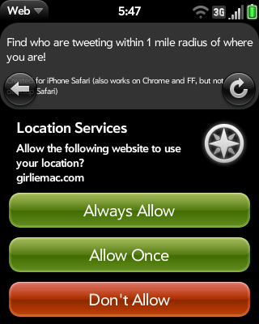

Access Permission



Events:deviceorientation, devicemotion, compassneedscalibration

Can we re-create this iOS app in HTML5/JS?
http://pizza-compass.com/
 "Web Real Time Communications"
"Web Real Time Communications"
var gum = navigator.getUserMedia ||
navigator.mozGetUserMedia||navigator.webkitGetUserMedia;
navigator.getUserMedia({video: true, audio: true},
successCallback, errorCallback);
** not supported by Opera 14 for Android (WebKit)